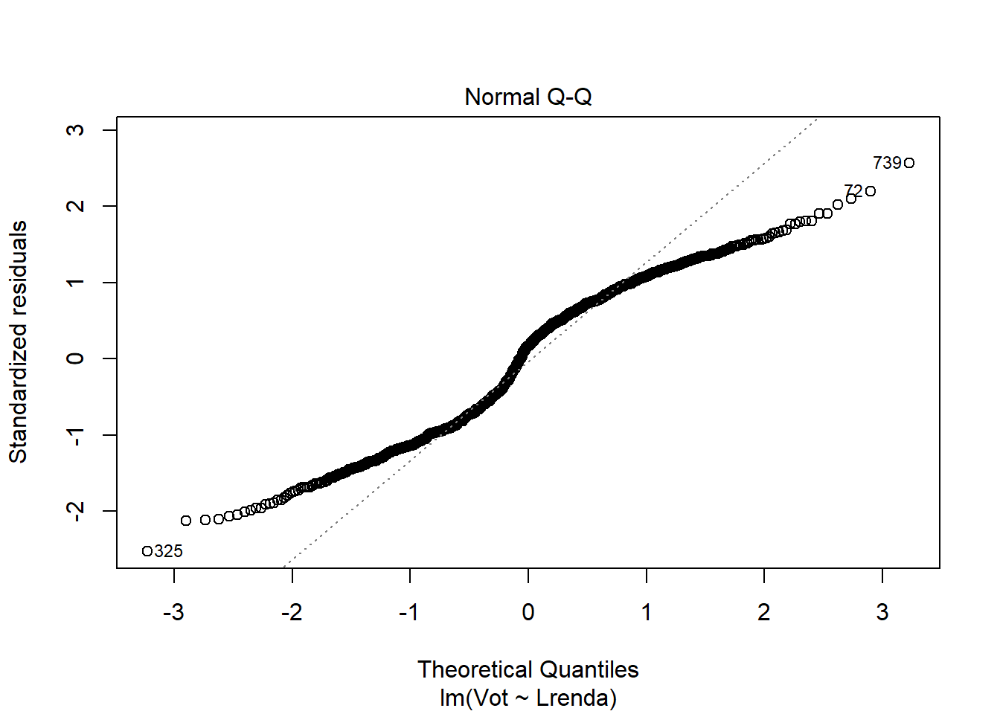
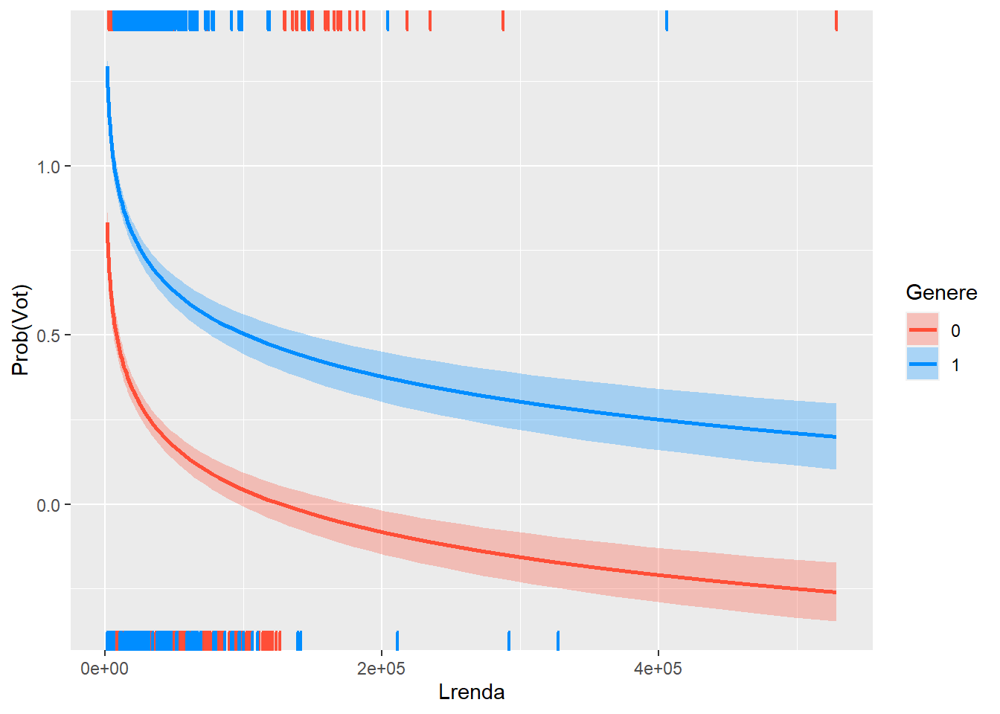
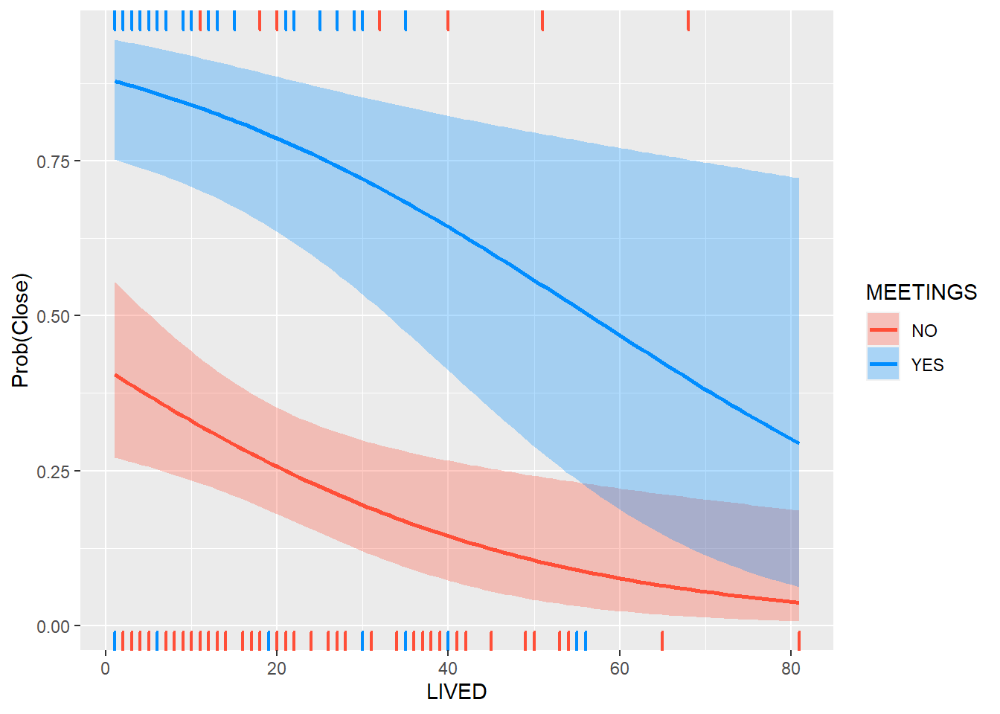
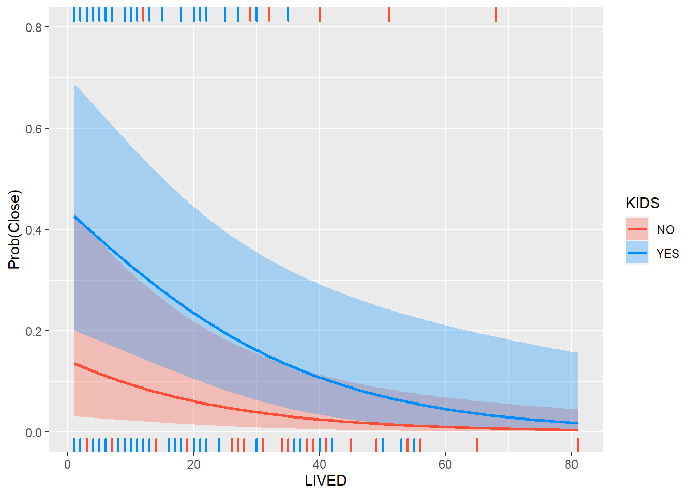

Capítol 5 Teoria Setmana 5
5.1 Packages
install.packages("visreg")5.2 Dades de intenció de vot
- Mostra aleatòria de mida n = 800 d’una població
- Variables: despesa, renda, gènere (1/0, home = 1), vot (1/0, partit A = 1)
library(foreign)
data <- read.spss("http://84.89.132.1/~satorra/dades/M2014dadesSIM.sav", to.data.frame = TRUE, use.value.labels = TRUE)
dim(data)## [1] 800 4library(knitr)
kable(head(head(data)))| Lrenda | Ldespeses | Genere | Vot |
|---|---|---|---|
| 9.477 | 4.503 | 1 | 1 |
| 11.435 | 6.147 | 1 | 0 |
| 10.686 | 4.961 | 0 | 0 |
| 10.407 | 3.993 | 0 | 0 |
| 10.814 | 5.746 | 0 | 0 |
| 9.944 | 4.950 | 0 | 1 |
summary(head(data))## Lrenda Ldespeses Genere Vot
## Min. : 9.477 Min. :3.993 Min. :0.0000 Min. :0.0000
## 1st Qu.:10.060 1st Qu.:4.615 1st Qu.:0.0000 1st Qu.:0.0000
## Median :10.546 Median :4.955 Median :0.0000 Median :0.0000
## Mean :10.460 Mean :5.050 Mean :0.3333 Mean :0.3333
## 3rd Qu.:10.782 3rd Qu.:5.550 3rd Qu.:0.7500 3rd Qu.:0.7500
## Max. :11.435 Max. :6.147 Max. :1.0000 Max. :1.0000S’observa un 33,3% en la intenció del vot del partit A.
5.2.1 La Regressió lineal
Fins ara, Y era una variable continua. Ara la Y es binaria (pren valors 0 o 1). Segueix essent vàlida la regressió lineal?
Veiem com quedaria la regressió lineal versus la loess.
data %>%
ggplot(aes(Lrenda, Vot))+
geom_jitter(height =0.02)+
geom_smooth(method='lm', se=FALSE, formula = y~x, aes(color = "lm"))+
geom_smooth(method='loess', se=FALSE, formula = y~x, aes(color = "loess"))
Mirem ara el resum de la regressió lineal.
re0 <-lm(Vot ~ Lrenda, data=data)
summary(re0)##
## Call:
## lm(formula = Vot ~ Lrenda, data = data)
##
## Residuals:
## Min 1Q Median 3Q Max
## -1.10516 -0.39910 0.07352 0.37185 1.12443
##
## Coefficients:
## Estimate Std. Error t value Pr(>|t|)
## (Intercept) 2.89760 0.15615 18.56 <2e-16 ***
## Lrenda -0.23403 0.01549 -15.11 <2e-16 ***
## ---
## Signif. codes: 0 '***' 0.001 '**' 0.01 '*' 0.05 '.' 0.1 ' ' 1
##
## Residual standard error: 0.4392 on 798 degrees of freedom
## Multiple R-squared: 0.2224, Adjusted R-squared: 0.2215
## F-statistic: 228.3 on 1 and 798 DF, p-value: < 2.2e-16Problemes quan la Y es binaria:
- La relació es no-lineal
- Els termes d’error són heteroscedàstics
- El terme d’error no té distribució normal
plot(re0,1)plot(re0,2)
5.2.2 La Regressió logística
L’alternativa és el model de regressió logística:
Suposem que \(Y_{i} \sim \mbox{Bernoulli }(p_i)\), \(p_i = P(Y_i = 1), \, i = 1, \dots, n\)
Transformem:
\[p \rightarrow odds(p) \rightarrow Logit(p)\]
on \(odds(p) = p/(1-p)\), en català raó de probabilitats.
\(p \rightarrow odds(p) \equiv p /(1- p) \rightarrow Logit(p) = \ln \, (odds (p)) = \ln \frac{p }{1 - p } \leftrightarrow p = \frac{1}{1 + e^{-L }}\)
Model lineal pel \(L = Logit(p) = \ln \frac{p }{1 - p }\):
\(L = \beta_0 + \beta_1 X_1 + \beta_2 X_2 + \beta_3 X_3\) Model no-lineal per p, on:
\(p \equiv E(Y \mid X_1, X_2, X_3) = \frac{1}{1 + e^{-( \beta_0 + \beta_1 X_1 + \beta_2 X_2 + \beta_3 X_3)}}\)
versus el model de regressió lineal clàssic que diu que \(p = \beta_0 + \beta_1 X_1 + \beta_2 X_2 + \beta_3 X_3\).
Exemple: Y = Vot, X = Lrenda \(P(Y = 1) = p = \frac{1}{1 + e^{-L_i}} = \frac{1}{1 + e^{- (\alpha + \beta * Lrenda)}}\).
re1<-glm(Vot ~ Lrenda, data=data, family = "binomial")
summary(re1)##
## Call:
## glm(formula = Vot ~ Lrenda, family = "binomial", data = data)
##
## Deviance Residuals:
## Min 1Q Median 3Q Max
## -2.5206 -0.9692 0.4540 0.9087 2.5511
##
## Coefficients:
## Estimate Std. Error z value Pr(>|z|)
## (Intercept) 12.389 1.027 12.07 <2e-16 ***
## Lrenda -1.208 0.101 -11.96 <2e-16 ***
## ---
## Signif. codes: 0 '***' 0.001 '**' 0.01 '*' 0.05 '.' 0.1 ' ' 1
##
## (Dispersion parameter for binomial family taken to be 1)
##
## Null deviance: 1101.02 on 799 degrees of freedom
## Residual deviance: 900.73 on 798 degrees of freedom
## AIC: 904.73
##
## Number of Fisher Scoring iterations: 4re1 %>% coef()## (Intercept) Lrenda
## 12.388980 -1.208374\[P(Y = 1) = p = \frac{1}{1 + e^{- (12.388980 - 1.208374 * Lrenda)}}\]
5.2.3 Interpretació dels paràmetres
re1 %>% coef() %>% exp() %>% round(4)## (Intercept) Lrenda
## 240140.5549 0.2987\(\hat{L} = 12.388980 - 1.208374 * Lrenda\)
\(exp(-1.208374 )= 0.2987 \rightarrow 0.2987 - 1 = -0.7013 \rightarrow odds(p)\)
Decreix un 70% en el canvi de x a X+1 (aproximadament duplicar ingressos ja que estan en escala log).
\((\exp(\beta) - 1)\times100\) =% d’augment/decreixement dels odds
5.2.4 Lineal versus Logística
data <- data %>%
mutate(
P_lm_Vot = 2.8975953 - 0.2340296 * Lrenda
, P_glm_Vot = 1/(1+ exp(-(12.388980 - 1.208374 * Lrenda )))) %>%
arrange(Lrenda )
data %>% select(P_glm_Vot,P_lm_Vot) %>% summary()## P_glm_Vot P_lm_Vot
## Min. :0.02833 Min. :-0.1864
## 1st Qu.:0.36861 1st Qu.: 0.3939
## Median :0.55061 Median : 0.5375
## Mean :0.55000 Mean : 0.5500
## 3rd Qu.:0.75337 3rd Qu.: 0.7145
## Max. :0.97631 Max. : 1.2184Observem valors poc desitjables negatius i per sobre de 1 en la variable P_lm_Vot. Veiem gràficament
data %>%
ggplot(aes(Lrenda, Vot))+
geom_jitter(width = 0.15, height =0.05)+
geom_smooth(method='lm', se=FALSE, formula = y~x, aes(color = "lm"))+
geom_smooth(method='loess', se=FALSE, formula = y~x, aes(color = "loess"))+
geom_line(aes(y=P_glm_Vot,color = "glm-logit"))+
geom_hline(yintercept=c(0,1))Observa com la corba obtinguda per la regressió logística (glm-logit) captura millor la tendència observada a través de la regressió Loess. Addicionalment la regressió logística defineix una asímptota respecte el 0 i l’1 (s’acosta, però no arriba a creuar mai).
5.2.5 Regressió logística amb covariants: Lrenda, gènere…
Ajustem un primer model.
suppressPackageStartupMessages(library(stargazer))
#Lineal
re2<-lm(Vot ~ Lrenda + Genere, data=data)
#Logística
re3<-glm(Vot ~ Lrenda + Genere, data=data, family = "binomial")
stargazer(re0,re1,re2, type = "text")##
## ===============================================================================
## Dependent variable:
## -----------------------------------------------------------
## Vot
## OLS logistic OLS
## (1) (2) (3)
## -------------------------------------------------------------------------------
## Lrenda -0.234*** -1.208*** -0.182***
## (0.015) (0.101) (0.014)
##
## Genere 0.460***
## (0.027)
##
## Constant 2.898*** 12.389*** 2.139***
## (0.156) (1.027) (0.142)
##
## -------------------------------------------------------------------------------
## Observations 800 800 800
## R2 0.222 0.425
## Adjusted R2 0.221 0.423
## Log Likelihood -450.366
## Akaike Inf. Crit. 904.732
## Residual Std. Error 0.439 (df = 798) 0.378 (df = 797)
## F Statistic 228.283*** (df = 1; 798) 294.136*** (df = 2; 797)
## ===============================================================================
## Note: *p<0.1; **p<0.05; ***p<0.01Els coeficients de la part lineal de la regressió logística.
re3 %>% coef() %>% round(2)## (Intercept) Lrenda Genere
## 12.30 -1.32 2.61Interpretem els coeficients en termes de odds.
re3 %>% coef() %>% exp() %>% round(4) - 1## (Intercept) Lrenda Genere
## 218904.9754 -0.7339 12.6663- La renta, a igualtat de gènere, ha incrementat en termes absoluts el seu efecte en una disminució de 73% sobre els odds de la intenció de Vot al duplicar els ingressos
- Per altra banda, els homes tenen un 12% d’increment en els odds de la intenció de Vot que les dones, a igualtat d’ingressos.
5.2.6 Regressió logística amb covariants: gràfic d’efectes condicionats
La funció visreg() ens resol la visualització del efecte de cada factor condicionat als valors fixes de la resta de variables (utilitza la mediana en numèriques o la moda en factors).
En aquest cas veiem l’efecte de la renta sobre la intenció de vot, condicionat al gènere.
library(visreg)
visreg(re3, "Lrenda",
by = "Genere",
band = TRUE, # viualitzem bandes
gg = TRUE, # usem ggplot2
overlay=TRUE, # un mateix grafic
scale="response") +
labs(y = "Prob(Vot)",
x = "Lrenda")Observem com els homes tenen una corba clarament per sobre. També, la variació de la intenció de vot es fa més pronunciada (mes pendent) en les dones en trams de rentes baixes que en homes (efecte no lineal).
També podem retornar la variable de Renta a escala normal (Euros) transformant amb la exponencial.
visreg(re2, "Lrenda",
by = "Genere",
xtrans = exp,
band = TRUE, # viualitzem bandes
gg = TRUE, # usem ggplot2
overlay=TRUE, # un mateix grafic
scale="response") +
labs(y = "Prob(Vot)",
x = "Lrenda")
El canvi d’escala accentua la interpretació anterior, es a dir, major variació en trams de rentes baixes en dones que en homes.
Pots profunditzar en el paràmetres de visreg a l’ajuda:
?visreg # paràmetres dels càlculs.
?plot.visreg # paràmetres del gràfic.5.3 Exemple de Vtown data
La contaminació per residus tòxics en el terreny de dos escoles públiques. Algunes persones pensaven que l’escola hauria d’estar tancada fins que el terreny fos declarat segur. Altres persones argumentaven que els costos no justificaven el risc i volien que es mantingués oberta l’escola afectada.
SCHOOL: Resposta si volien que l’escola estigués tancada (CLOSE) o oberta (OPEN).
GENDER: Gènere de l’enquestat.
LIVED: Anys de residencia al municipi.
KIDS: L’enquestat té nens, o no.
EDUC: Anys d’estudis de l’enquestat.
MEETINGS: L’enquestat ha anat als mítings sobre crisis provocada per la contaminació.
CONTAM: L’enquestat creu que la seva propietat ha estat contaminada (o no).
Motivació: llegir la noticia Exposició a contaminació de la mare i deficiència en pes (LBW) dels nadons
Les dades.
library(foreign)
da <- as.data.frame(read.spss("http://84.89.132.1/~satorra/dades/VtTown.sav", to.data.frame = TRUE))
head(da)## ID GENDER LIVED KIDS EDUC MEETINGS CONTAM SCHOOL
## 1 1 MALE 35 YES 12 YES YES CLOSE
## 2 2 MALE 5 YES 14 YES NO CLOSE
## 3 3 MALE 21 NO 12 YES YES CLOSE
## 4 4 MALE 6 NO 16 NO NO OPEN
## 5 5 MALE 12 YES 18 NO NO OPEN
## 6 6 MALE 12 YES 16 NO NO OPENda %>% count(SCHOOL)## SCHOOL n
## 1 OPEN 87
## 2 CLOSE 66da <- da %>%
mutate(Y = as.numeric(SCHOOL) -1)
da %>% count(Y)## Y n
## 1 0 87
## 2 1 66L’objectiu és analitzar la propensió de la intenció de tancar l’escola fins que no es confirmi que està des contaminada.
reg1<- glm(Y ~ LIVED + MEETINGS, binomial, data=da )
summary(reg1)##
## Call:
## glm(formula = Y ~ LIVED + MEETINGS, family = binomial, data = da)
##
## Deviance Residuals:
## Min 1Q Median 3Q Max
## -2.0559 -0.8567 -0.5140 0.6189 2.3832
##
## Coefficients:
## Estimate Std. Error z value Pr(>|z|)
## (Intercept) -0.34850 0.31816 -1.095 0.27336
## LIVED -0.03575 0.01355 -2.638 0.00833 **
## MEETINGSYES 2.36882 0.44298 5.347 8.92e-08 ***
## ---
## Signif. codes: 0 '***' 0.001 '**' 0.01 '*' 0.05 '.' 0.1 ' ' 1
##
## (Dispersion parameter for binomial family taken to be 1)
##
## Null deviance: 209.21 on 152 degrees of freedom
## Residual deviance: 160.27 on 150 degrees of freedom
## AIC: 166.27
##
## Number of Fisher Scoring iterations: 4Gràficament,
visreg(reg1, "LIVED",
by = "MEETINGS",
band = TRUE, # viualitzem bandes
gg = TRUE, # usem ggplot2
overlay=TRUE, # un mateix grafic
scale="response") +
labs(y = "Prob(Close)",
x = "LIVED")
Definim un model complert amb un factor de interacció de GENDER y KIDS.
da <- da %>%
mutate(MALE = 1.0*(GENDER=="MALE"))
lreg2 <- glm(Y ~ LIVED + EDUC+ CONTAM+MEETINGS+MALE+KIDS+ KIDS*MALE ,family=binomial, data= da)
summary(lreg2)##
## Call:
## glm(formula = Y ~ LIVED + EDUC + CONTAM + MEETINGS + MALE + KIDS +
## KIDS * MALE, family = binomial, data = da)
##
## Deviance Residuals:
## Min 1Q Median 3Q Max
## -2.6027 -0.7557 -0.3091 0.6316 2.3920
##
## Coefficients:
## Estimate Std. Error z value Pr(>|z|)
## (Intercept) 2.84216 1.44277 1.970 0.04885 *
## LIVED -0.04664 0.01698 -2.748 0.00600 **
## EDUC -0.20602 0.09320 -2.211 0.02706 *
## CONTAMYES 1.28208 0.48137 2.663 0.00774 **
## MEETINGSYES 2.41800 0.50966 4.744 2.09e-06 ***
## MALE -2.17443 0.81906 -2.655 0.00794 **
## KIDSYES -0.67062 0.56561 -1.186 0.23576
## MALE:KIDSYES 2.22599 0.99911 2.228 0.02588 *
## ---
## Signif. codes: 0 '***' 0.001 '**' 0.01 '*' 0.05 '.' 0.1 ' ' 1
##
## (Dispersion parameter for binomial family taken to be 1)
##
## Null deviance: 209.21 on 152 degrees of freedom
## Residual deviance: 141.05 on 145 degrees of freedom
## AIC: 157.05
##
## Number of Fisher Scoring iterations: 5da <- da %>%
mutate(INTER = (1.0*(KIDS=="NO"))*MALE)
lreg3 <- glm(Y ~ LIVED + EDUC + CONTAM + MEETINGS+ INTER ,family=binomial, data= da)
stargazer(lreg2, lreg3, type="text")##
## ==============================================
## Dependent variable:
## ----------------------------
## Y
## (1) (2)
## ----------------------------------------------
## LIVED -0.047*** -0.040**
## (0.017) (0.015)
##
## EDUC -0.206** -0.197**
## (0.093) (0.093)
##
## CONTAMYES 1.282*** 1.299***
## (0.481) (0.477)
##
## MEETINGSYES 2.418*** 2.279***
## (0.510) (0.490)
##
## MALE -2.174***
## (0.819)
##
## KIDSYES -0.671
## (0.566)
##
## MALE:KIDSYES 2.226**
## (0.999)
##
## INTER -1.731**
## (0.725)
##
## Constant 2.842** 2.182
## (1.443) (1.330)
##
## ----------------------------------------------
## Observations 153 153
## Log Likelihood -70.525 -71.326
## Akaike Inf. Crit. 157.049 154.652
## ==============================================
## Note: *p<0.1; **p<0.05; ***p<0.01Comparem l’ajust dels dos models.
anova( lreg3, lreg2, test = "Chisq")## Analysis of Deviance Table
##
## Model 1: Y ~ LIVED + EDUC + CONTAM + MEETINGS + INTER
## Model 2: Y ~ LIVED + EDUC + CONTAM + MEETINGS + MALE + KIDS + KIDS * MALE
## Resid. Df Resid. Dev Df Deviance Pr(>Chi)
## 1 147 142.65
## 2 145 141.05 2 1.6031 0.4486Analitzem el canvi d’efecte dels anys de residencia condicionat a tenir (o no) nens, dins del grup d’homes.
visreg(lreg2, "LIVED",
by = "KIDS",
cond=list(MALE=1), # condicionem a ser home
band = TRUE, # viualitzem bandes
gg = TRUE, # usem ggplot2
overlay=TRUE, # un mateix grafic
scale="response") +
labs(y = "Prob(Close)",
x = "LIVED")
5.3.1 Anàlisis bivariant preliminar
Fem un pas enrere. Com en el cas de la regressió lineal, abans de modelitzar, es interesant fer un breu anàlisis bivariant de les variables que es volen introduir en el model.
Veiem un exemple a partir dels quantils de la variable LIVED .
quantile(da$LIVED, seq(0,1,0.2))## 0% 20% 40% 60% 80% 100%
## 1.0 5.0 10.0 20.0 31.6 81.0A partir del quantils de la variable podem definir una partició de la variable lived.
da <- da %>%
mutate(LIVED_T = cut(LIVED, c(-Inf, 5,10, 20, 32,Inf)))
da %>% count(LIVED_T)## LIVED_T n
## 1 (-Inf,5] 40
## 2 (5,10] 23
## 3 (10,20] 33
## 4 (20,32] 27
## 5 (32, Inf] 30Mirem-ho ara amb les freqüències relatives de cada fila.
da %>%
group_by(LIVED_T) %>%
summarise(freq_absolutes = n()
,propensio = mean(Y))## # A tibble: 5 x 3
## LIVED_T freq_absolutes propensio
## <fct> <int> <dbl>
## 1 (-Inf,5] 40 0.6
## 2 (5,10] 23 0.522
## 3 (10,20] 33 0.394
## 4 (20,32] 27 0.481
## 5 (32, Inf] 30 0.133Incorporem els intervals de confiança.
Recorda que la desviació típica de una variable bernoulli(p) on p es la probabilitat de estar Indecís, val:
\[ stdDesv(Y ) = \sqrt{p*q} \]
on q = 1- p.
Per altra banda, l’error estàndard es calcula com:
\[ errStd(Y ) = \sqrt{p*q / n} \]
on n es el nombre observacions.
D’aquesta forma, l’interval de confiança (95%) es defineix com.
\[\left[p - 1.96*\sqrt{p*q / n}, p + 1.96*\sqrt{p*q / n}\right]\]
Ara en R.
errStd_bin <- function(x) { sqrt(mean(x)*(1-mean(x)) / length(x))}
minInt_bin <- function(x) { mean(x) - 1.96 *errStd_bin(x) }
maxInt_bin <- function(x) { mean(x) + 1.96 *errStd_bin(x) }
RESUM <- da %>%
group_by(LIVED_T) %>%
summarise(freq_absolutes = n()
,I_minim = minInt_bin(Y )
,propensio = mean(Y )
,I_maxim = maxInt_bin(Y )) %>%
mutate(freq_relatives = freq_absolutes / sum(freq_absolutes))
RESUM## # A tibble: 5 x 6
## LIVED_T freq_absolutes I_minim propensio I_maxim freq_relatives
## <fct> <int> <dbl> <dbl> <dbl> <dbl>
## 1 (-Inf,5] 40 0.448 0.6 0.752 0.261
## 2 (5,10] 23 0.318 0.522 0.726 0.150
## 3 (10,20] 33 0.227 0.394 0.561 0.216
## 4 (20,32] 27 0.293 0.481 0.670 0.176
## 5 (32, Inf] 30 0.0117 0.133 0.255 0.196Gràficament,
suppressPackageStartupMessages(library(cowplot))
library(scales)
p1 <- RESUM %>%
ggplot(aes(LIVED_T, freq_relatives)) +
geom_bar(stat="identity")+
geom_text(aes(label = freq_absolutes), vjust=1.6, color="white")+
scale_y_continuous(labels = percent)+
theme_minimal()+
theme(axis.text.x = element_text(angle = 90, vjust = 0.5, hjust=1))+
labs(title="Freqüencies")
p2 <- RESUM %>%
ggplot(aes(LIVED_T, propensio)) +
geom_point(size = 1.5) +
geom_errorbar(aes(ymin =I_minim, ymax = I_maxim, width = .2))+
scale_y_continuous(labels = percent)+
theme_minimal()+
theme(axis.text.x = element_text(angle = 90, vjust = 0.5, hjust=1))+
labs(title="Intervals confiança Indecisió")
plot_grid(p1, p2, ncol=2)Mateix anàlisi, sobre la variable MEETINGS :
RESUM <- da %>%
group_by(MEETINGS ) %>%
summarise(freq_absolutes = n()
,I_minim = minInt_bin(Y )
,propensio = mean(Y )
,I_maxim = maxInt_bin(Y )) %>%
mutate(freq_relatives = freq_absolutes / sum(freq_absolutes))
p1 <- RESUM %>%
ggplot(aes(MEETINGS , freq_relatives)) +
geom_bar(stat="identity")+
geom_text(aes(label = freq_absolutes), vjust=1.6, color="white")+
scale_y_continuous(labels = percent)+
theme_minimal()+
theme(axis.text.x = element_text(angle = 90, vjust = 0.5, hjust=1))+
labs(title="Freqüencies")
p2 <- RESUM %>%
ggplot(aes(MEETINGS , propensio)) +
geom_point(size = 1.5) +
geom_errorbar(aes(ymin =I_minim, ymax = I_maxim, width = .2))+
scale_y_continuous(labels = percent)+
theme_minimal()+
theme(axis.text.x = element_text(angle = 90, vjust = 0.5, hjust=1))+
labs(title="Intervals confiança Indecisió")
plot_grid(p1, p2, ncol=2)